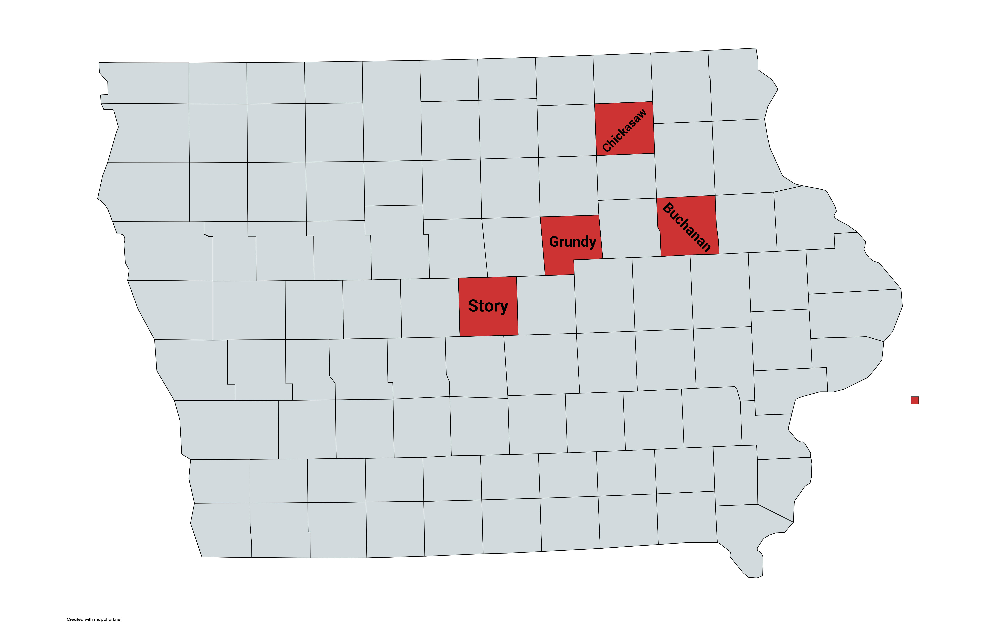
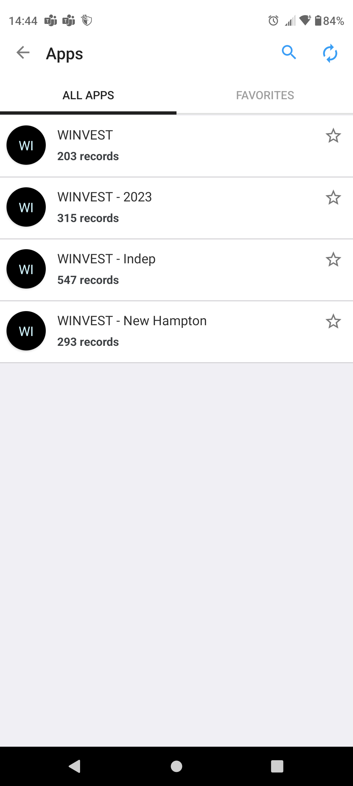
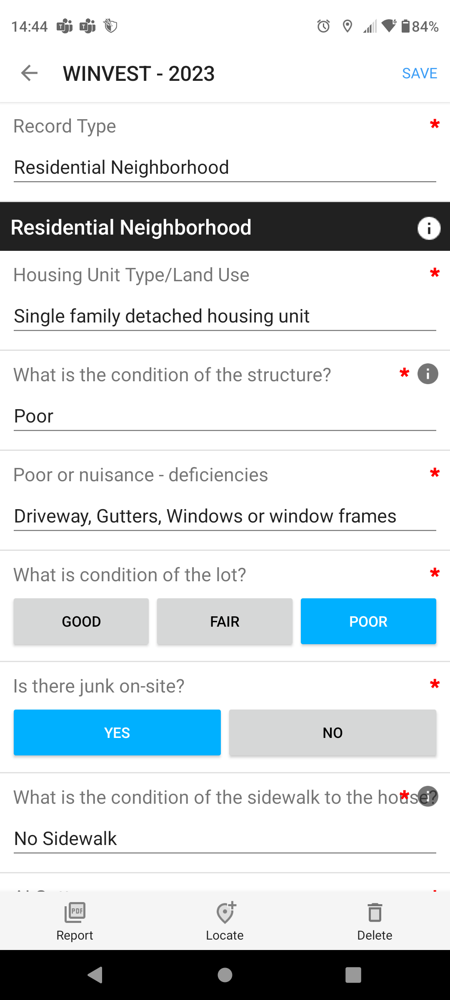
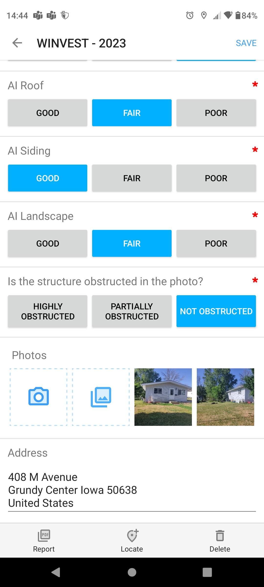
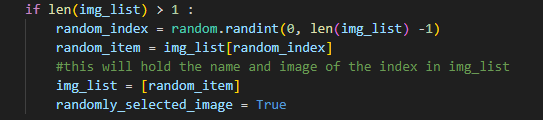
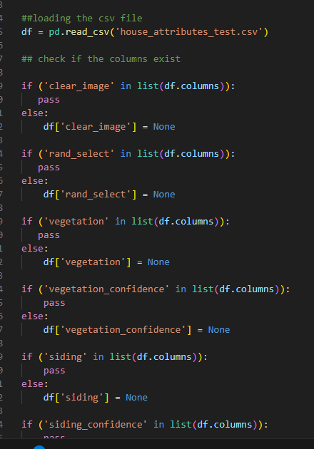
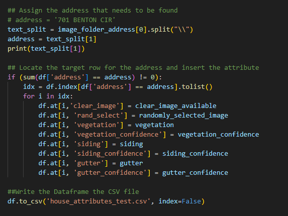
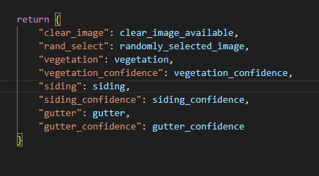
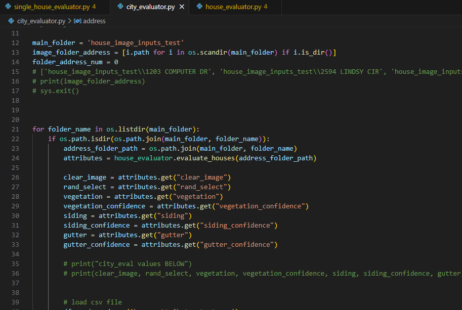

Data Collection and Python Evaluator Improvements
Monday DSPG assessed Grundy Center and New Hampton by taking pictures of houses and tracking characteristics of the houses. Tuesday we had a similar experience assessing Independence. A few details came to mind during these events, first in the Fulcrum app we had the option to evaluate roofs labeled AI Roof.
Assuming that in future years roofing will be added to the list of characteristics evaluated I thought that when looking at roofs you need not only assess the quality of the roof but also the age. I believe there is a difference between a faded old roof and a new damaged roof. If DSPG goes to cities assessing the houses again it would be wise to sit down as a group and discuss what is considered good, fair, and poor in every single category. While assessing with other DSPG members I realized that people’s opinions of these categories greatly differed.
While talking to residents of these towns I was made aware of other issues besides what we were evaluating such as plumbing and flooding issues. Although these are different than what the Housing team is currently directed towards maybe it could be projects for the future in DSPG.
Due to the AI Roof category I left a space for the roofing model. If I have extra time I will fill this space with two models, one that evaluates whether the roof is damaged and one that evaluates the age. Additionally I added a spot for an AI window evaluator for a model that can predict whether there is a boarded up or broken window, inspired by Google images I downloaded from addresses considered poor or very poor in Des Moines. An option to look for in future years is an AI model that can look for multiple characteristics such as age and damage for roofs. Another we discussed this week is AI heatmaps which show where the AI is looking in the image to determine it’s guess. I really want to attempt this time permitting.
Now for reading relief:
I made this graph real quick just to visualize the counties which we are focusing on. Grundy Center is in Grundy County, New Hampton is in Chickasaw County, Independence is in Buchanan County, and Slater is in Story County.

Here is a closer look at the fulcrum app we used to evaluate houses. The first image shows the different folders for each community, followed by the interface for a singular house evaluation.



Next for the code I built on the skeleton from last week mostly following the code plan diagram I made 2 weeks ago(?). As of right now house_evaluator.py can read in a folder with images in it (as if it was one house from multiple sources). The program will use the house_present_classifier, clear_image_classifier, and multiple_houses_classifier models. These models evaluate whether each image has a visible house, whether the house is obstructed, and if there are multiple houses visible. Ideally we want to evaluate an image with a house, minimal obstruction, and only one house visible. Each model will remove unwanted images from the list in the hopes of choosing only the best image of the house to evaluate.
If no image remains the program returns that a better image is needed of the house. If multiple good pictures of the house remain the program will randomly select one. I hope to implement looking at the date of the images before randomly selecting but we do not have dates of images stored from any source yet.

Next the remaining image will be ran through the vegetation, siding, and gutter models. As I said last week the gutter model is on hold until I get more images of poor gutters and spaces in the code are there for roof and window models for either next year or my free time. All of the models predict pretty poorly still because we need a lot more data on bad house images but they are predicting at a 35-45% confidence rate currently.
After I got all of the models in the program properly I started to work on writing to CSV files. The intention was to print each attribute such as vegetation in it’s respective column based on address. I used the CSV library which turned out to take longer than it seems giving me issues such as wiping the file clean, not writing any values, then writing values to the leftmost row available after address. I finally got the attributes to print to the correct column but printed on every row instead of only one row based on address.
Sadat, our AI fellow, used Pandas and could correctly do the correct task in about 10 lines where it took my method about 40 lines of code. Long story short I am now implementing pandas to manipulate the csv files.
This code shows the program checking if the columns exist in the csv and if not adding the column. Then the values of each is wrote to the CSV file. After discussion with Sadat I added the model confidence percentage so that as we upload more accurate models we can see how well they are preforming and also give an average confidence for a final report.


In summary this program so far can take in a folder of images, choose the best one, evaluate it’s vegetation, siding, and gutters, then print these attributes to a csv at the same address as the input folder. This python Script was nearing 400 lines of code due to tests and old code I commented out to save. To run many images through this program I think the easiest path would to make a parent folder full of folders labeled by address and inside of the address folders are the images for each address. I did not want a 400 line for loop to iterate through this parent folder so my goal for this weekend is to make two scripts.
The first script will read in the files and iterate through them calling the second script each run to evaluate the images within and return house attributes. The first script will take these attributes and return them to a CSV file to the proper column and address. This will be essentially the same as what I have working now but it will be able to read and document many folders of houses rather than individual houses manually placed at a time. I will leave the current script alone since it works and make two completely new scripts to improve this method.
End of Day Friday Update
Today was very productive, the entire program now works. city_evaluator.py can read in a parent folder which contains address folders, it then calls house_evaluator.py for each address folder. house_evaluator runs images through the AI models (still largely inaccurate) then returns attributes of the image detected. Having multiple files was accomplished by creating a function within house_evaluator then calling that function in city_evaluator.


After loading in all the variables in city_eval I wrote to the csv by address. This method largely stayed the same from yesterday I just had to tweak it so that the name being printed to was iterated.

In my actual conclusion I will say this was a very successful week even though it was shortened. I plan to make a blog post just for my weekend project so that I don’t have to remember it next Thursday. I will attempt to make an AI heatmap so we can visually see why the models guess incorrectly (right now they suck because we barely have any data). A lot of people I have talked to think of object detection when I say AI heatmap so I will need to explain in depth why this is different. Also in the image above you can see gutter is FALSE and 0 confidence because I have still neglected making that model. I now have access to data maybe I can get it made next week. We also REALLY need to update the other models with the data we collected in Grundy Center, Independence, and New Hampton.